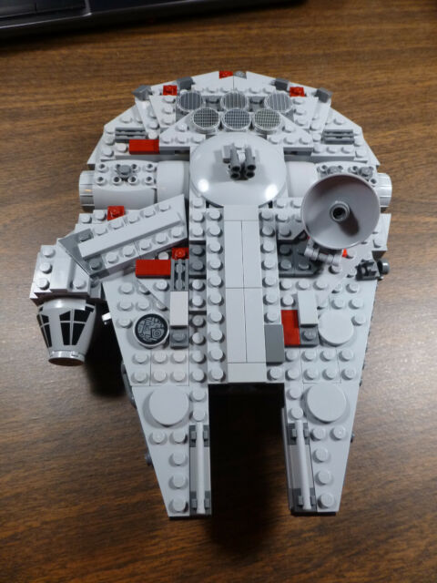

In 2009, I built my first advanced LEGO set, the Star Wars Millennium Falcon, which was an exciting experience. I carefully assembled the intricate pieces and created the spaceship I had always wanted.